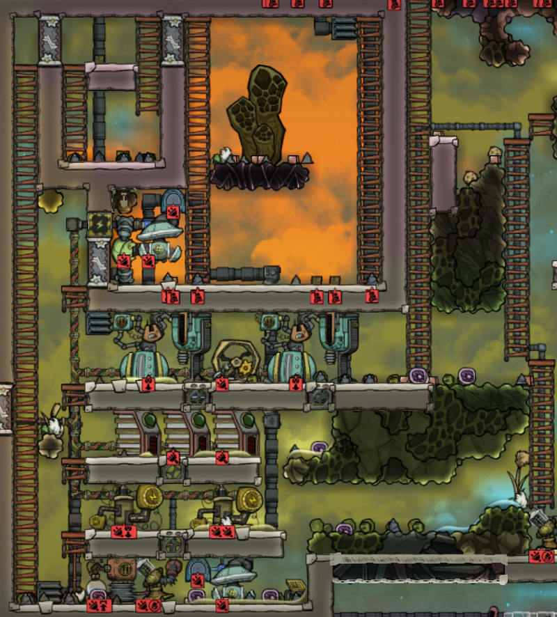
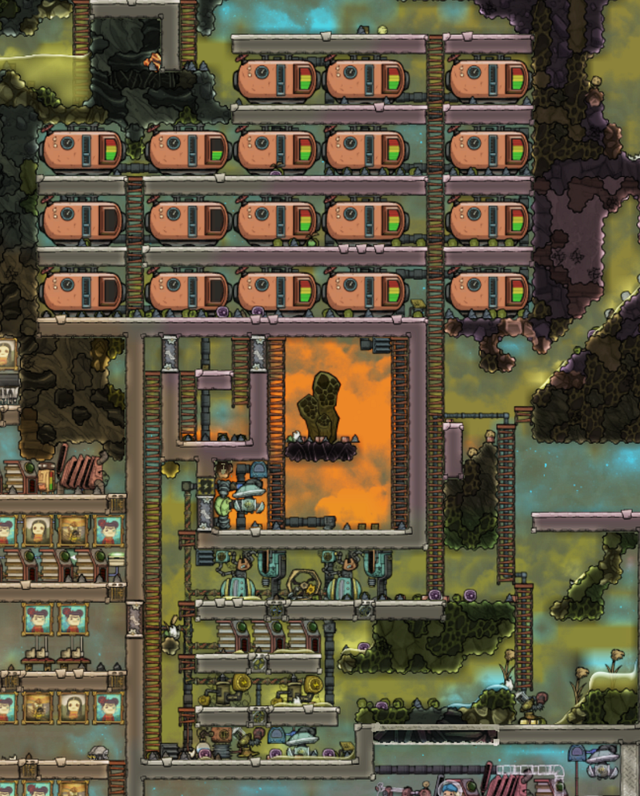
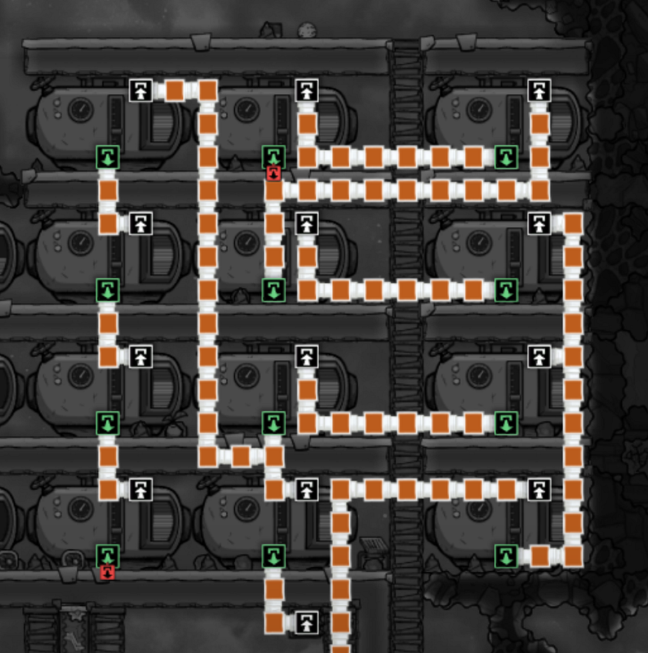
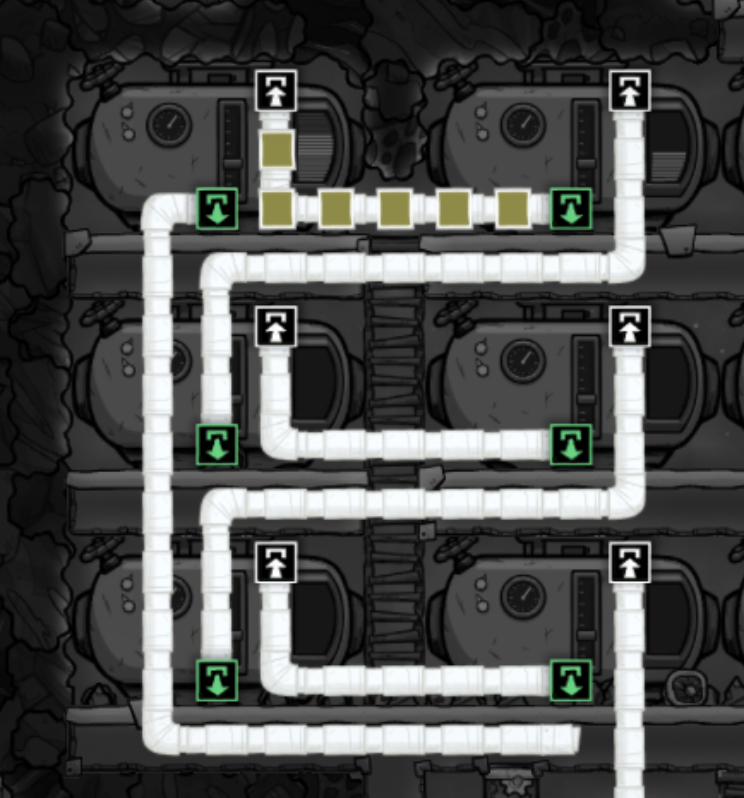

Gas Reservoir To Fix Gas Leakage
Gas Reservoir To Fix Gas Leakage
So I had this Natural Gas Power Plant, shown below.

I accidentally popped a hole right above the heavy wire bridge to the upper left side. I was busy restoring food production at the time, so I forgot to check back for a few cycles — and guess what, the entire bottom was flooded with Natural Gas.
:(
Now, before the Rocketry Upgrade, the only thing we could have done was to pump the gas back into the chamber.
The problem with that approach is that in these situations, the surrounding area is already pressurized enough that you cannot really exhaust the contents out of the chamber before replacing it with the escaped gas (and the geyser doesn’t help if it’s venting).
Of course, the “correct” way to handle it is by producing Plastic, and to use a High Pressure Gas Vent. But as you can see from the picture above, I got none of that (I tend to avoid using Petroleum unless I absolutely need to)
Enter The Gas Reservoir
But since the Rocketry Upgrade, we can now use Gas Reservoirs!

The Gas Reservoir allows you to store 150kg of gas in a 3x4 space. This is significantly less storage compared to when you use a High Pressure Gas Vent, but its a great way to buffer gaseous elements quickly.
So I built a farm of Gas Reservoirs in batches, and started piping through the Natural Gas to them. You can tell that this was hastily done, and I didn’t have enough time to think about the capacity before building the Gas Reservoirs by looking at the mess of Gas Pipes below:

But the point is, this got the job done. I basically used the Gas Pump that was sitting at the bottom — this was placed when I initially built the power plant, to scoop up any Natural Gas that might escape from the chamber.
The Natural Gas flow was temporarily changed so that it first pumped gas into the Natural Gas Generators, but any excess would go to the Gas Reservoirs up above.
Also, in order to accommodate for exhaust gas from the Gas Filter, I built more Gas Reservoirs to store that too. This meant that we didn’t have to worry about the Gas Filters getting stuck on blocked pipes for the exhaust.
You can see that I built this afterwards, because the piping is slightly saner… :)

Using these reservoirs, I was able to remove the entire leakage back into containers. And just in case we ran out of Natural Gas, I made the exhaust from the reservoirs to go back into the gas chamber, so it automatically charged the contents back when the pressure in the chamber gets low enough to do so.
This was one of the best ways that the new Gas Reservoirs helped me. I think I will be using that again and again in the future :)